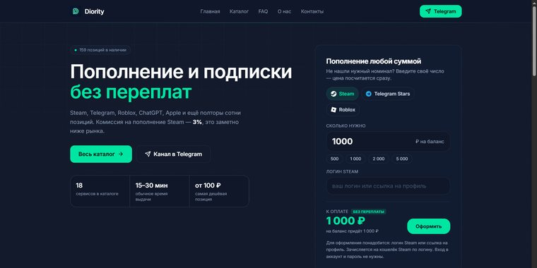
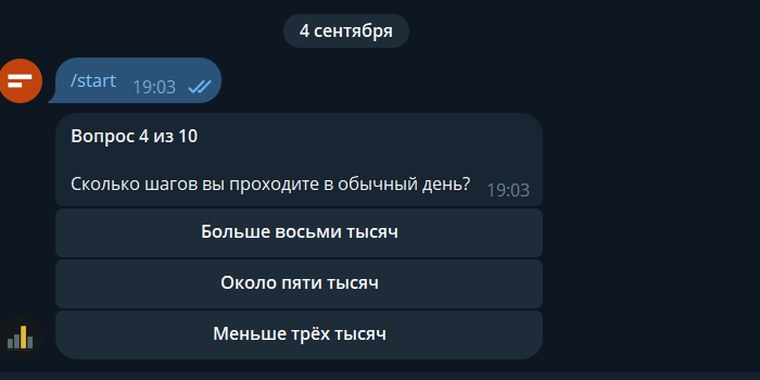
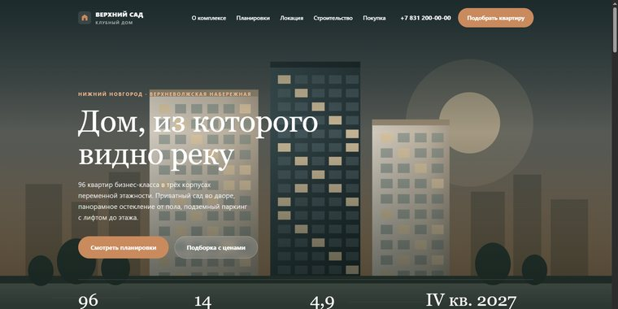

Заявки обрабатываются вручную
Менеджер копирует данные из формы в CRM, пишет первый ответ, ставит напоминание. Ошибается, забывает, уходит в отпуск. Половина заявок остывает раньше, чем до них доходят руки.
Нахожу в бизнесе ручную работу, которая обходится дороже всего, и убираю её. Первый работающий процесс — через 7 дней после старта, а не через полтора месяца.
Это не про «внедрить ИИ». Это про конкретные операции, которые сотрудник повторяет по десять раз в день и на которые уходит рабочая неделя в месяц.
Менеджер копирует данные из формы в CRM, пишет первый ответ, ставит напоминание. Ошибается, забывает, уходит в отпуск. Половина заявок остывает раньше, чем до них доходят руки.
Выгрузка из одной системы, сведение в таблице, пересылка в чат. Каждую неделю одно и то же, по три-четыре часа. К моменту готовности цифры уже неактуальны.
Напоминания, догрев, повторное касание, запрос отзыва. Всё держится на памяти конкретного человека — и рассыпается, как только он занят.
Главный страх при работе с подрядчиком — заплатить и пропасть в неизвестности на месяц. Поэтому срок короткий, а шаги видны заранее.
Смотрю, как процесс работает сейчас. Считаю, сколько часов в неделю он съедает и во что это обходится в деньгах. Выбираем один процесс — тот, где разница будет самой заметной.
Собираю систему: интеграции, логика, обработка исключений. Внутри может быть бот, форма, агент, связка с CRM — вам это знать не обязательно, вы покупаете результат, а не стек.
Запускаем параллельно с ручным процессом и сверяем. Ловим то, что всплывает только на живых кейсах: пустые поля, дубли, нестандартные ответы клиентов.
Отдаю работающую систему, короткую инструкцию и цифру: было столько-то часов в неделю, стало столько-то. Дальше — либо следующий процесс, либо расходимся.
Это собственные проекты, а не клиентские кейсы — говорю прямо. И статус у каждого указан честно: что работает, что концепт, что ещё делается.

Магазин цифровых товаров: 159 позиций, каталог по категориям, приём оплаты, обработка и выдача заказа за 15–30 минут. Спроектирован, собран и запущен в одиночку, работает с живыми покупателями каждый день.

Десять вопросов, результат считается по четырём шкалам. Каждое прохождение пишется в базу, владелец выгружает всё одной командой в таблицу. Вопросы вынесены отдельным файлом, чтобы менять их без разработчика.

Лендинг застройщика: планировки, ход строительства, условия ипотеки, форма заявки. Один файл на 46 КБ и ноль внешних запросов — открывается мгновенно даже на слабом мобильном интернете.
Чтобы вы поняли, подхожу ли я вам, не потратив на это созвон. Каждая ступень имеет смысл сама по себе — начинать с последней не нужно.
Три дня. Карта процессов, оценка в часах и деньгах, план на первый месяц. Платный, потому что бесплатное не внедряют.
Семь дней. Один процесс, доведённый до конца и до замера. На выходе — работающая система и цифра «было / стало».
Поддержка работающего плюс один новый процесс в месяц. Для тех, у кого автоматизация стала частью операционки.
Внутренний продукт или MVP целиком. Берусь только с теми, с кем уже работали, — иначе риск слишком высок для обеих сторон.
Fabrestra — студия из одного специалиста. Это не недостаток, который нужно скрывать: у вас нет менеджера-прокладки, нет очереди внутри агентства и нет наценки на офис. Вы говорите напрямую с тем, кто собирает систему.
Покажете, как процесс работает сейчас. Скажу, что из этого имеет смысл автоматизировать, что не имеет, и в какие сроки и деньги это укладывается. Без презентаций и без обязательств.